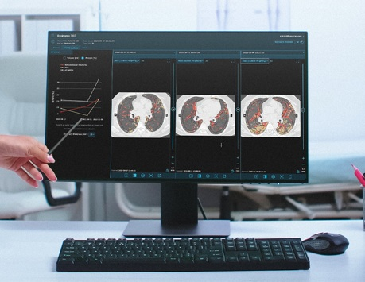
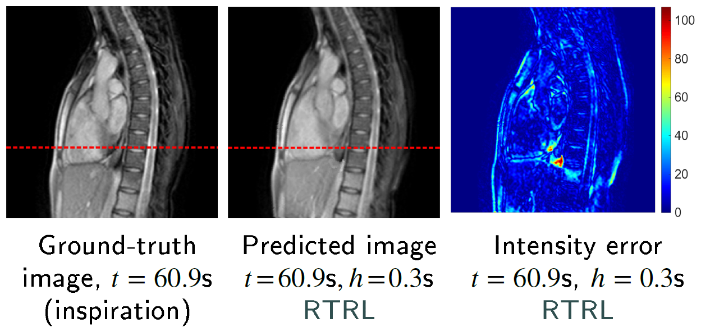
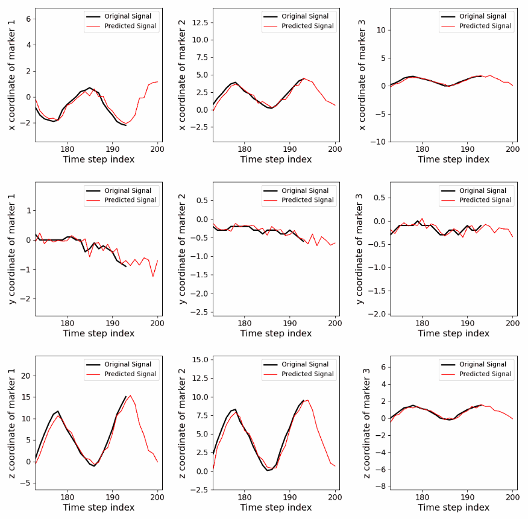
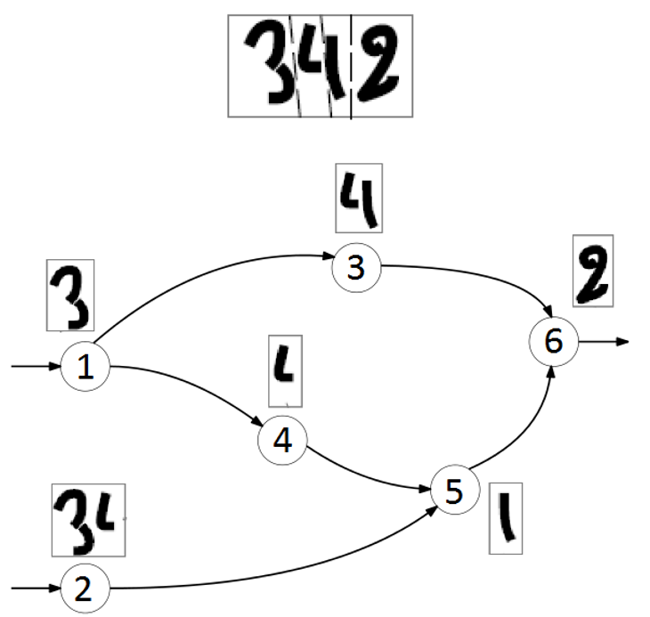

Automated assessment of ILD in chest CT imaging @ Brainomix (Oxford, 2022–current)
I developed and deployed an explainable respiratory phase classifier for chest CT using shape features derived from deep learning-based trachea and lung segmentations to support the reliability of in-house imaging biomarkers for ILD. I also conducted survival analysis using random survival forests and Cox proportional hazards models to assess the predictive power of these biomarkers. I automated this analysis and optimized memory and speed to improve ML testing workflows in CI/CD. Furthermore, I worked on denoising as a preprocessing step (e.g., via guided filtering) and level-set-based postprocessing to enhance airway and lung segmentation.
Deep generative modeling and NLP for finance @ Sony CSL (Tokyo, 2022)
I researched NLP algorithms, including approaches involving transformer-based language models (BERT and MPNet) and LSTMs with GloVe embeddings, for problems such as fake-news detection and regression of environmental, social, and governance (ESG) risk-scores, supporting Nomura Asset Management in assessing corporate sustainability. I also designed an interpretable method for fund-level greenwashing detection by deriving projection-distance formulas to compare neural embeddings of internal sustainability reports and external news in a subspace defined using ESG criteria. In addition, I also developed a method inspired by the optical-flow algorithm to estimate time-dependent loadings in security factor models and trained a variational autoencoder to learn and visualize low-dimensional fund-month exposure embeddings, supporting investment analysis at GPIF, one of the world's largest pension funds.

Cine-MR image forecasting with transformers and online-trained RNNs for latency compensation in radiotherapy @ The University of Tokyo (2017–2021, independent work until 2026)
I developed an algorithm to forecast frames in chest and liver image sequences for safe MR-guided radiotherapy, combining deformable image registration, PCA-based motion modeling, and temporal dynamics prediction with RNNs trained online and transformer encoders. The proposed approach is modular, interpretable, and data-efficient. The online learning component helps address motion irregularity when using limited training data. In addition, projection onto a low-dimensional motion subspace can help mitigate distributional shifts between training and test datasets for population models. This approach achieved performance broadly in line with results reported for VAE-based forecasting models in related studies.

Marker-position forecasting using RNNs trained online for safer radiotherapy @ The University of Tokyo (2020–2021, independent work until 2025)
I derived implementations of online training algorithms for RNNs (UORO, SnAp-1, and DNI) with closed-form simplifications, improved accuracy, and reduced asymptotic time/memory complexity. This study is the first to assess their ability to forecast the 3D positions of external markers on the chest and abdomen for latency compensation and robotic control in radiotherapy. Experimentally, modern online-learning algorithms enabled RNNs to adapt fairly well to irregular breathing patterns and achieve competitive accuracy with less data than prior deep-learning approaches, while keeping processing time relatively low.
UORO article:
Follow-up article (covering also SnAp-1 and DNI):

Simultaneous segmentation and recognition of characters @ Idemia (Île-de-France, 2016)
I prototyped an OCR pipeline in C for degraded text images, consisting of three successive steps: over-segmentation, character recognition, and shortest-path graph decoding using Viterbi's algorithm to select the most likely string (see the figure above). It achieved 13.4% higher accuracy than Tesseract 3.04, an open-source OCR engine. Over-segmentation (i.e., candidate cut generation) relied on Dijkstra's algorithm applied to a graph representation of the input image, where each pixel was assigned to a node and edge weights were based on pixel intensities and heuristics; I optimized asymptotic time complexity using a binary-search-style strategy. For the second step in the pipeline, I implemented from scratch a character-level neural-network classifier, trained it on ~20k character images, and improved accuracy by ~5% by incorporating a class-conditional Bayesian aspect-ratio prior.

Graph-structured data classification based on spectral methods and the generalized likelihood-ratio test @ Fresnel Institute (Marseille, 2016)
I implemented from scratch a binary classifier for graph-structured data, combining generalized likelihood ratio testing and graph Fourier transforms, based on prior work from Hu et al. (2016). I applied this method to Alzheimer's disease detection by modeling brain regions in PET images as nodes in a graph. The edge weights, representing similarity between regional imaging feature values, were computed using a Gaussian RBF kernel. This approach yielded a leave-one-out test F1 score of 0.85 on a dataset of 142 brain scans (61 healthy controls and 81 Alzheimer's disease cases). Lastly, I explored optimization of region-independent weights associated with each of the 5 image-derived features, such as the intensity mean or entropy, to maximize accuracy.